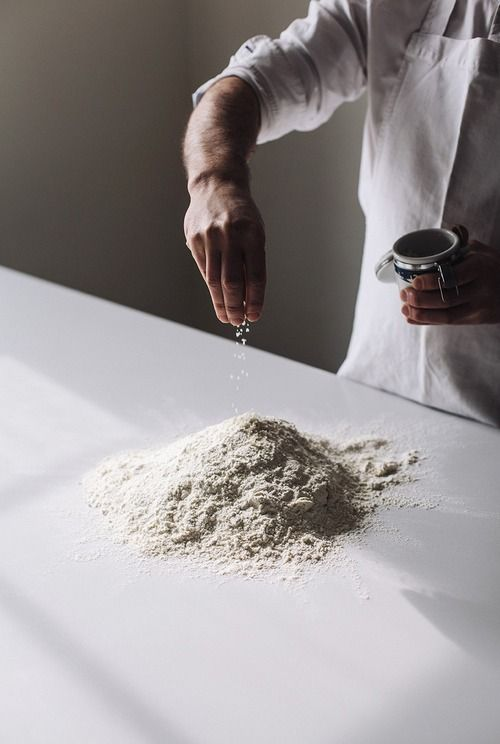

BRAND STORY
職人之心，饈之款待

ESTABLISHED 2024
美學的
起點
「饈」，意指精美的食物。在饈菓子，我們不只是在製作甜點，更是在傳遞一份關於節氣、土地與手作溫度的禮物。
空間保留了木質的溫潤與歲月的痕跡，讓訪客在穿過暖簾的那一刻，都能感受到時間的靜止。

SEASONAL PHILOSOPHY
旬之
哲學
和菓子的靈魂在於「季節感」。我們順應節氣，選用當下最新鮮的食材。每一道菓子的造型，都是大地無聲的告白。
在寧靜的器皿中，展現出 Wabi-Sabi 的缺陷美與不完美中的完美。

THE MASTERY
指尖的
溫度
每一顆菓子都需要職人經過數千次的捏塑。那份指尖微小的力道差異，決定了菓子的神韻。
我們堅持手作，不只是為了傳統，更是為了保留那份機器無法取代的人性溫度。